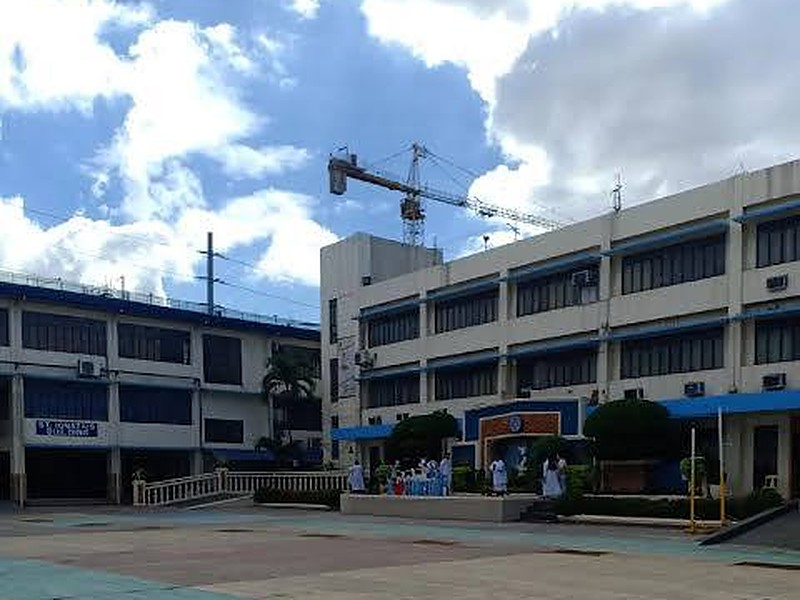

St. Mary’s College of Meycauayan, Inc. (SMCM) is a Catholic educational institution located in Saluysoy, MacArthur Highway, Meycauayan City, Bulacan, Philippines. Founded in 1916, SMCM has grown from a small parochial school into a full basic and tertiary education institution.
The school’s mission centers on forming learners through faith, excellence, and service — values that continue to guide its academic programs, campus life, and community engagement today.

Private Catholic educational institution offering Basic Education and Tertiary programs.
Saluysoy, MacArthur Highway, Meycauayan City, Bulacan, Philippines.
1916, originally as Escuela Parroquial de Meycauayan.
SMCM believes in forming the whole person — spiritually, intellectually, and socially. Rooted in Catholic teaching and the tradition of the Religious of the Virgin Mary (RVM), the school integrates faith formation with academic rigor and community service.
Every learner is guided to grow in knowledge, character, and compassion, preparing them for life beyond the classroom.